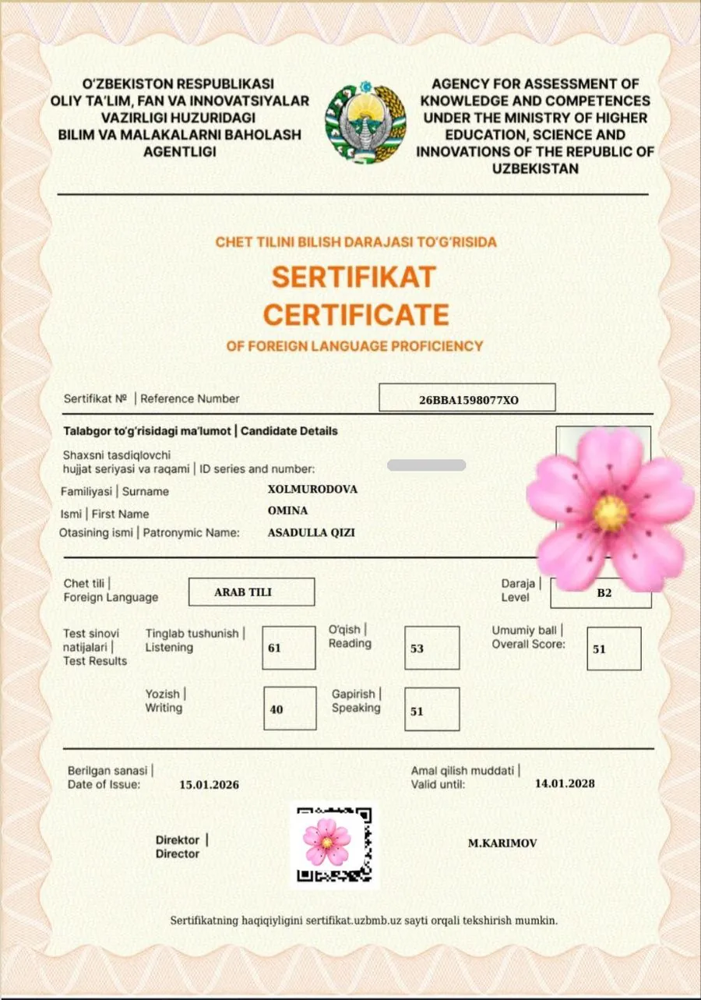
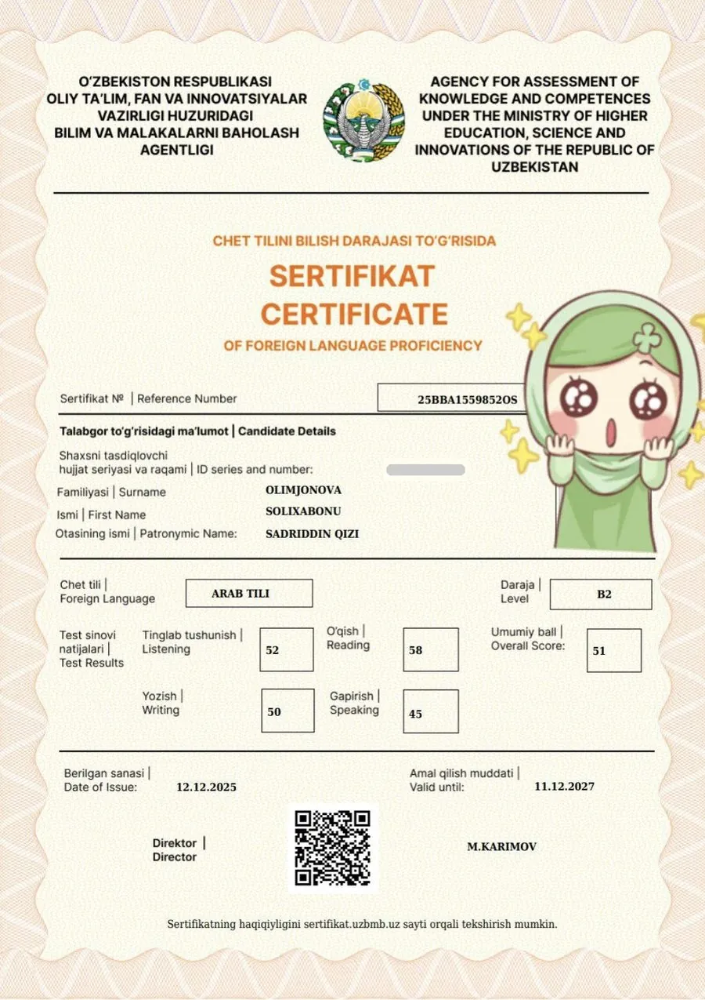
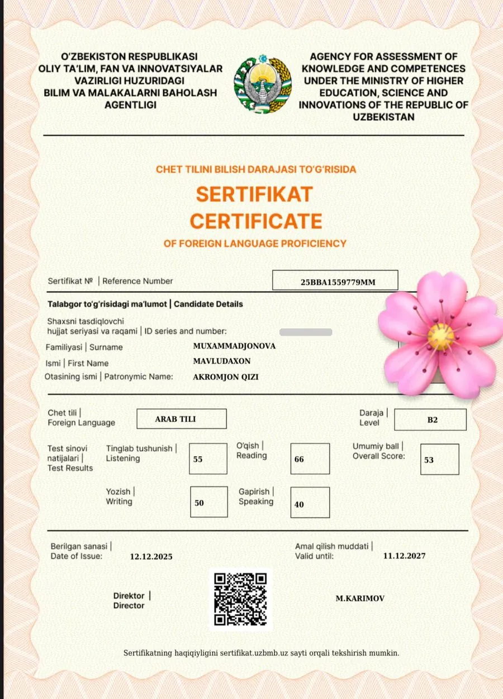
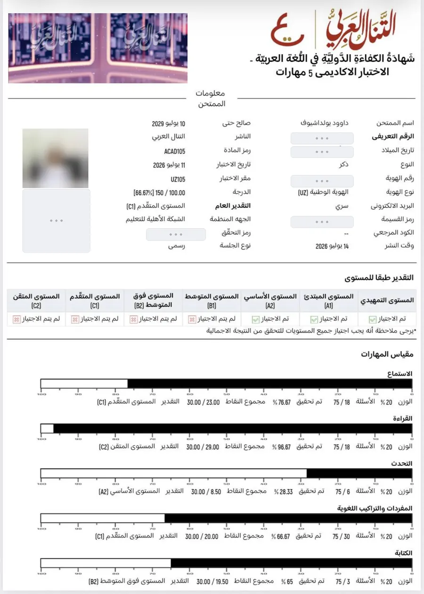

SAIDacademy
SAIDacademyArab tili o‘quv markazi · Toshkent
Broshyura · 2026
Bilim yangi imkoniyatlar eshigini ochadi
Bolalar va kattalar uchun arab tili. Avval to‘g‘ri o‘qish, keyin grammatika.
أ
saidacademy.uzTinchlik metrosi yaqinida
Birinchi dars bepulHar kuni 07:00–20:00
Biz haqimizda
Arab tilini fonetikadan boshlaymiz
SAID academy — 2025-yildan Toshkentda. Avval to‘g‘ri o‘qish va talaffuz, keyin grammatika — shunda bilim mustahkam qoladi.
400+talaba
10ustoz
B2–C1o‘quvchilar sertifikatlari
7/7har kuni 07:00 – 20:00
Kimlar uchun
Bolalar
4 yoshdan. Harflar, talaffuz va bo‘g‘inlab o‘qish — o‘yin tarzida.
Kattalar
Noldan boshlovchilar uchun fonetika: harflardan ravon o‘qishgacha.
O‘qiy oladiganlar
Grammatika: matnni tushunish va o‘z fikrini to‘g‘ri ifodalash.
Birinchi dars bepul. Kelib, ustoz va muhit bilan tanishing — qarorni keyin qilasiz.
Nega aynan biz
Tekshirsa bo‘ladigan faktlar
Har bir band saytda hujjat bilan tasdiqlangan.
01
Fonetikadan boshlaymiz
Avval to‘g‘ri o‘qish va talaffuz, keyin grammatika.
02
Sertifikatli ustozlar
Davlat CEFR B2–C1 va xalqaro sertifikatlar. sertifikat.uzbmb.uz da tekshiriladi.
03
Natija isbot bilan
O‘quvchilarimiz davlat B2 va xalqaro C1 sertifikatlarini qo‘lga kiritgan.
04
Kichik guruhlar
Ko‘pi bilan 10–12 kishi — har bir o‘quvchiga e’tibor yetadi.
05
Davlat litsenziyasi
Maktabgacha va maktab ta’limi vazirligi tasdiqnomasi № 681282.
06
Dars qoplanadi
Kela olmadingizmi? Darsni boshqa kuni o‘tib beramiz.
Kurslar
Uch yo‘nalish
Yoshga va darajaga qarab. Har bir kursda nazariya, amaliy mashqlar va matnlar bir tizimda.
01
4 yoshdanBolalar uchun fonetika
- Harflar va ularning shakllari
- To‘g‘ri talaffuz
- Bo‘g‘inlab o‘qish, o‘yin bilan
- Kichik guruhda, har bolaga e’tibor
Guruh · Individual02
Noldan boshlovchilarKattalar uchun fonetika
- Harflar: boshida, o‘rtasida, oxirida
- To‘g‘ri talaffuz va o‘qish qoidalari
- Kurs oxirida arabcha matnni ravon o‘qiysiz
- Grammatikaga tayyor poydevor
Guruh · Individual03
O‘qiy oladiganlarArab tili grammatikasi
- So‘z turkumlari
- Gap tuzilishi va fe’l shakllari
- Har mavzu matn bilan mustahkamlanadi
- Maqsad: tushunish va to‘g‘ri gapirish
Guruh · Individual
1 soat 20 daq.guruh darsi
40 daqiqaindividual dars
10–12 kishiguruhda ko‘pi bilan
Qanday boshlanadi
Uch oddiy qadam
Ariza qoldirishdan birinchi darsgacha — bir necha kun.
1
1-qadam
Ariza qoldirasiz
Saytdagi formani to‘ldirasiz yoki qo‘ng‘iroq qilasiz. Bu 1 daqiqa oladi.
2
2-qadam
Biz qo‘ng‘iroq qilamiz
Kun davomida bog‘lanib, qulay vaqt va mos guruhni kelishib olamiz.
3
3-qadam
Bepul darsga kelasiz
Ustoz va darslar bilan tanishasiz. Yoqsa — guruhda davom etasiz.
Fonetika
Harflar, talaffuz, bo‘g‘inlab va ravon o‘qish.
Grammatika
So‘z turkumlari, gap tuzilishi, matn bilan ishlash.
Dars qoplanadi
Kela olmasangiz, darsni boshqa kuni o‘tib beramiz.
Jamoa
Ustozlarimiz
O‘nta ustoz — hammasi arab tili mutaxassisi.
Direktor · ustoz
Ne’matullayev Saidkamolxon Mansurbek o‘g‘li
Fonetika, grammatika
- Oriental universiteti bitiruvchisi
- CEFR B2 (davlat sertifikati)
- 4 yillik tajriba
2025-yildan SAID academy asoschisi va direktori.
Arab tili ustozi
Solihbekov Ne’matullo Lutfullo o‘g‘li
Fonetika, grammatika
- CEFR C1 (davlat sertifikati, 2024)
- Ko‘kaldosh madrasasi bitiruvchisi
- 4 yildan ortiq tajriba
500+ o‘quvchi: 5 nafari C1, 30 dan ortig‘i B2.
Arab tili ustozi
Kabirjonov Abdurahmon Zafarjon o‘g‘li
Fonetika, grammatika
- Oriental universiteti, 4-kurs
- 4–5 yillik tajriba
500 dan ortiq o‘quvchiga dars bergan.
Arab tili ustozi
Fozilov Ibrohim Komiljon o‘g‘li
Grammatika
- CEFR B2 (davlat sertifikati)
- Yangi Asr universiteti, filologiya
100+ o‘quvchi: 5 nafari B2, 3 nafari B1 darajasiga erishdi.
Arab tili ustozi
Orifjonov Abduvohid Sherzod o‘g‘li
Fonetika, grammatika
- At-Tanal al-Arabi B2 (xalqaro)
- Turkiyada 2 yillik tajriba
40 dan ortiq o‘quvchiga dars bergan.
Ustozni birga tanlaymiz
Birinchi bepul darsda ustoz va guruh bilan tanishasiz. Yosh, daraja va vaqtga qarab mos guruhni birga tanlaymiz.
Jamoa
Ustozlarimiz
Bolalar va kattalar guruhlarida fonetika hamda grammatika.
Arab tili ustozi
Babaev Dilshod Rustam o‘g‘li
Fonetika, grammatika
- At-Tanal al-Arabi C1 (xalqaro)
- Ko‘kaldosh madrasasi talabasi
40 dan ortiq o‘quvchiga dars bergan.
Arab tili ustozasi
Qudratillayeva Malikaxon Alisher qizi
Fonetika, grammatika
- CEFR B2 (davlat sertifikati)
- ToshDSHU, arab tili filologi
- 3 yillik tajriba
100+ o‘quvchi. 4 oyda noldan suhbat darajasigacha.
Arab tili ustozasi
Jaxongirova Shaxzoda Ziyoviddin qizi
Fonetika, grammatika
- CEFR B2 (davlat sertifikati)
- Yangi Asr universiteti, 4-kurs
50+ o‘quvchi. 4 oyda noldan suhbat darajasigacha.
Arab tili ustozasi
Mirziyodova Sevinch Abdunosir qizi
Fonetika, grammatika
- CEFR B2 (davlat sertifikati, 2024)
- Yangi Asr universiteti, 2-kurs
- 2 yillik tajriba
40+ o‘quvchi. 6 oyda noldan suhbat darajasigacha.
Arab tili ustozasi
Baxodirova Fotima Baxtiyor qizi
Fonetika, grammatika
- CEFR B2 (davlat sertifikati)
- O‘zDJTU, arab filologiyasi
Bolalar va kattalar guruhlarida dars beradi.

Rasmiy litsenziya
Davlat tasdiqnomasi
Maktabgacha va maktab ta’limi vazirligi, № 681282, 24.03.2025. “SAIDKAMOL ACADEMY” MChJ.
Natijalar
Natijalar o‘zlari gapirsin
O‘quvchilarimiz arab tilidan davlat va xalqaro sertifikatlarni qo‘lga kiritdi.

Omina XolmurodovaB2Davlat sertifikati · 2026

Solixabonu OlimjonovaB2Davlat sertifikati · 2025

Mavludaxon MuxammadjonovaB2Davlat sertifikati · 2025

Dovud Yo‘ldoshevC1Xalqaro sertifikat · 2026
Davlat sertifikatlari sertifikat.uzbmb.uz saytida tekshiriladi. Xalqaro sertifikat — At-Tanal al-Arabi. Shaxsiy ma’lumotlar yopilgan.
Maqsad bitta: “harflarni bilaman” emas — “o‘qiyman, tushunaman va gapiraman”.
Markazdan lavhalar
Savol-javob
Ko‘p beriladigan savollar
Boshqa savol bo‘lsa — qo‘ng‘iroq qiling yoki Telegramga yozing.
Birinchi dars haqiqatan bepulmi?Ha. Kelib, ustoz va darslar bilan tanishasiz, yoqsa guruhda davom etasiz.
Necha yoshdan qabul qilasiz?Fonetikaga 4 yoshdan bolalar va kattalar. Grammatika asosan kattalar uchun.
Dars qancha davom etadi?Guruh darsi 1 soat 20 daqiqa, individual dars 40 daqiqa.
Guruhda necha kishi bo‘ladi?Ko‘pi bilan 10–12 kishi.
Darsga kela olmasam-chi?Darsni boshqa kuni o‘tib beramiz — sabab o‘zingizda bo‘lsa ham.
Ota-onalar natijani qanday biladi?Istalgan vaqt ustoz bilan bevosita bog‘lanib, farzandining o‘zlashtirishini bilib turasiz.
Markaz qayerda?Toshkent, Shayxontohur tumani, Matlubot ko‘chasi, 72. Tinchlik metrosi yaqinida.
Rasmiy faoliyat yuritasizmi?Ha. Maktabgacha va maktab ta’limi vazirligi tasdiqnomasi № 681282.
 SAIDacademy
SAIDacademy
Boshlash uchun
Birinchi dars — bepul
Kelib, ustozlar va muhit bilan o‘zingiz tanishing. Qo‘ng‘iroq qiling yoki QR-kod orqali saytdan ariza qoldiring.
Sayt · arizasaidacademy.uz
Telegram@saidacademy_admin
Instagram@said_academy_
Ish vaqtiHar kuni 07:00 — 20:00
ManzilToshkent sh., Shayxontohur tumani, Ilg‘or MFY,
Matlubot ko‘chasi, 72-uy
Tinchlik metrosi yaqinida
Saytsaidacademy.uz